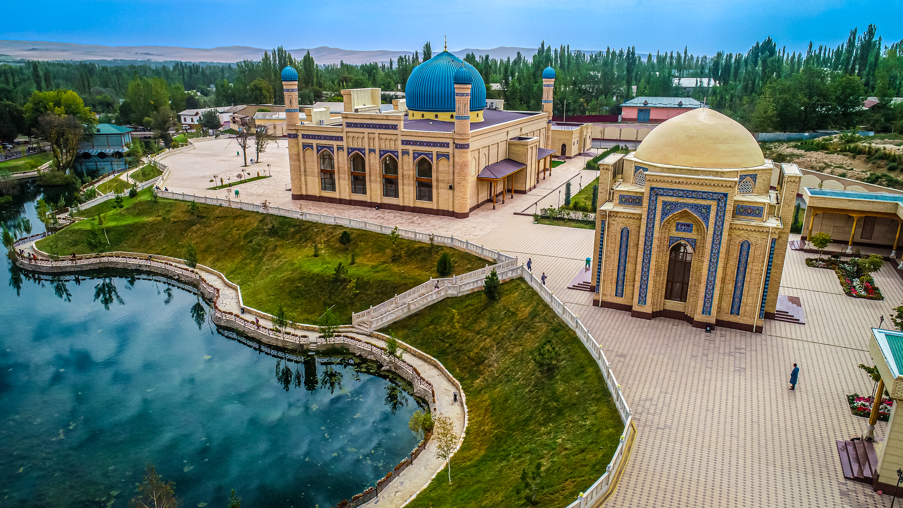

Namangan viloyati
Namangan — Oʻzbekistonning sharqiy qismida, Fargʻona vodiysining shimoliy chekkasida joylashgan qadimiy va navqiron shahar. Namangan viloyatining maʼmuriy, iqtisodiy va madaniy markazi hisoblangan ushbu shahar, aholi soni boʻyicha mamlakatimizda Toshkentdan keyin ikkinchi oʻrinda turadi. Oʻzining betakror tabiati, mehmondoʻst xalqi va qadimiy hunarmandchilik anʼanalari bilan mashhur boʻlgan Namangan bugungi kunda zamonaviy sanoat va tadbirkorlik markaziga aylanib bormoqda.
